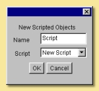
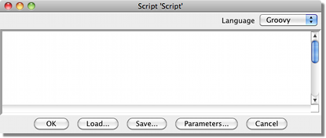
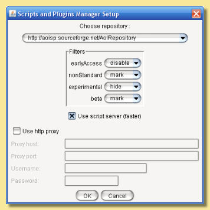

|
To add an Object Script, select Tools -> Create Scripted Object. This displays the dialogue
shown on the right: At this point, you can give it a name by typing into the Name box. To create a new instance of an already written script, select the name of the script from the Script drop down menu (AoI will automatically list any .bsh files that are in the /Scripts/Objects folder) and click OK. |
 |
|  |
Enter the lines of the script directly into the main part of the window or Load an existing
script into it. See the Scripting Tutorial for details of actual script programming. Click on Save to save the script. Ensure that it is saved into the /Scripts/Objects folder so that AoI can find it. Parameters is a way of adding variables to a script which can be controlled outside of the script via animation tracks. See the Scripting Tutorial for more details. |
|  |
The Choose repository dropdown
list allows the choice of the repository currently used. This allows the
selection of a backup repository in case the main repository is not
responding. The chosen repository is remembered the next time AoI is launched.
The Repositories list is updated each time AoI is launched or each time the Rescan button is clicked.
It is thus not necessary to manually update this list. If something goes wrong, though, you might have
to delete the file named .spmanagerprefs and use the URLs hard coded in the plugin.
This file is saved next to the AoI
preferences file. You might also want to manually add a URL to this
file (the format is straightforward). The current property must be set to the
number of the URL you add to the file. Be warned, though, that any
manual addition of a URL to this file is temporary since a fresh list
of repositories will be downloaded at next connection. Filters allow the seach to be tailored for particular types of script/plugin. The Proxy section makes it possible to use a proxy if access through a firewall is required. Security Warning : Passwords are saved encrypted. However, since the code for password decryption is available in the source code, it is always possible for the code to be broken. If you do not wish the password to be saved, you can enter a dummy password in the setup window before quitting the manager. |